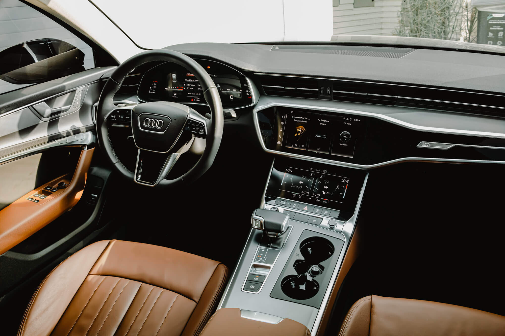

SPORTİF VE ZARİF DIŞ TASARIM
Yeni Audi A6 Sedan, sportif hatları ve aerodinamik gövde yapısıyla segmentine yeni bir soluk getiriyor. Karakteristik Singleframe ızgarası ve HD Matrix LED far teknolojisi ile her açıdan mükemmel bir duruş sergiliyor.
- ✓ HD Matrix LED Farlar
- ✓ 19 inç Alüminyum Alaşımlı Jantlar
- ✓ Panoramik Cam Tavan

PREMIUM İÇ MEKAN TEKNOLOJİSİ
Audi'nin dijitalleşme vizyonunu yansıtan iç mekan, Audi Virtual Cockpit ve çift dokunmatik MMI ekranı ile fütüristik bir deneyim sunuyor. Yüksek kaliteli malzemeler ve ince işçilik, yolculukları birinci sınıf bir deneyime dönüştürüyor.
- ✓ Valcona Deri Spor Koltuklar
- ✓ 4 Bölgeli Tam Otomatik Klima
- ✓ Bang & Olufsen Premium 3D Ses Sistemi
TEKNİK MÜHENDİSLİK
0-100 KM/H6.0sn
GÜÇ245hp
MAKSİMUM TORK370nm
MOTOR HACMİ1.984cc
MAKSİMUM HIZ250km/h
BOŞ AĞIRLIK1.745kg
ŞANZIMANS-tronic7-ileri
ÇEKİŞ SİSTEMİquattroAWD
SİLİNDİR4Sıralı 4